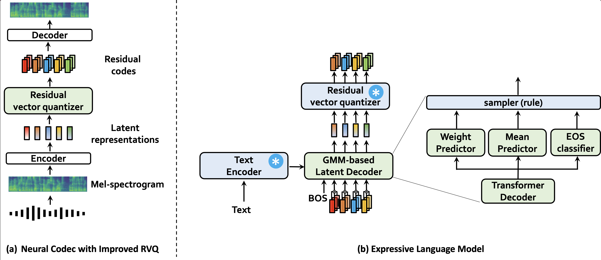

Abstract. Neural codec language models trained on large-scale training dataset have recently gained attention as a promising approach for zero-shot multi-speaker Text-to-Speech. However, audio representation with long sequences of tokens (e.g., 75 tokens for 1-sec audio) remains a challenge. This introduces computational difficulties for training/inference of an autoregressive model and poor voice synthesis. We propose CLaM-TTS that employs a probabilistic residual vector quantization modeling 1) achieving reducing speech token length while preserving reconstruction quality, and 2) allowing a latent language model to produce a continuous latent audio representation and generate discrete code with the proposed RVQ. We scale up the training dataset to 100K. Our experimental results demonstrate that CLaM-TTS is comparable to or better than state-of-the-art zero-shot TTS baselines in terms of naturalness, intelligibility, and speaker similarity. In addition, we examine the impact of the pretraining extent of the language models and their text tokenization strategies on TTS performance.
이 자리에 개쩌는 sample 하나 예를 들면 주커버그가 얘기했다가 옵티머스 프라임이 얘기했다가 ...
Model Overview

An overview of CLaM-TTS. CLAM-TTS is based on a neural codec with a high compression rate resulting in a short sequence length for representing speech signals; and latent language modeling which enhances the expressive power of the model and inference speed.
(a) We employ a mel-spectrogram-based variational autoencoder with the proposed probabilistic residual vector quantization (see Sec.~\ref{}). (b) illustrate the architecture of CLaM-TTS. We employ a latent language model which enhances the expressive power of the model by using Gaussian mixture (GM) modeling.
(TBU)
Zero-Shot TTS
| Text | Speaker Prompt | Ground Truth | YourTTS | VALL-E | Mega-TTS | CLaM-TTS | |
|---|---|---|---|---|---|---|---|
| In addition, the proposed legislation will insure. |
Celebrities and Characters
Text
Name
Speaker Prompt
CLaM-TTS
We must unite and harness our strengths, for the fate of our world hangs in the balance.
Optimus Prime
However, if you choose to stay, know that the truth I unveil may forever alter the course of your journey.
Benedict Cumberbatch
So here we are, trying to catch up, and hoping this day turns around soon.
Jessie Eisenberg
And sometimes, in both realms, it's not just about shining the brightest, but enduring the longest.
Michale Caine
But to those who knew her well, it was a symbol of her unwavering determination and spirit
Rachael McAdams
We have the responsibility to ensure power and technology are used for the greater good
Robert Downie Jr.
Our goal is to bridge communication gaps and preserve the richness of these unique languages.
Mark Zuckerberg
| Text | Name | Speaker Prompt | CLaM-TTS |
|---|---|---|---|
| We must unite and harness our strengths, for the fate of our world hangs in the balance. | Optimus Prime | ||
| However, if you choose to stay, know that the truth I unveil may forever alter the course of your journey. | Benedict Cumberbatch | ||
| So here we are, trying to catch up, and hoping this day turns around soon. | Jessie Eisenberg | ||
| And sometimes, in both realms, it's not just about shining the brightest, but enduring the longest. | Michale Caine | ||
| But to those who knew her well, it was a symbol of her unwavering determination and spirit | Rachael McAdams | ||
| We have the responsibility to ensure power and technology are used for the greater good | Robert Downie Jr. | ||
| Our goal is to bridge communication gaps and preserve the richness of these unique languages. | Mark Zuckerberg |
Speaker Diversity
| Text | Sample #1 | Sample #2 | Sample #3 | Sample #4 | Sample #5 |
|---|---|---|---|---|---|
| They moved thereafter cautiously about the hut groping before and about them to find something to show that Warrenton had fulfilled his mission. |
Robustness
CLaM-TTS can synthesize robust speech, as supported by its low WER. Samples texts are brought from Mega-TTS demo.
| Text | Mega-TTS | CLaM-TTS |
|---|---|---|
| Thursday, via a joint press release and Microsoft speech Blog, we will announce Microsoft’s continued partnership with Shell leveraging cloud, speech, and collaboration technology to drive industry innovation and transformation. | ||
| The great Greek grape growers grow great Greek grapes one one one. |
Multilingual
VALL-E can synthesize personalized speech while maintaining the emotion in the speaker prompt. The audio prompts are sampled from the Emotional Voices Database.
| Text | Language | Speaker Prompt | YourTTS | CLaM-TTS |
|---|---|---|---|---|
| We have to reduce the number of plastic bags. | Portuguese |
Text Prompting
VALL-E can synthesize speech based on the speaker attribute given in the front of the text.
| Text | CLaM-TTS |
|---|---|
| woman, 30~39 years old: Hope you enjoyed listening to clam, the improved neural codec language model. | |
| woman, 30~39 years old: Hope you enjoyed listening to clam, the improved neural codec language model. | |
| woman, 30~39 years old: Hope you enjoyed listening to clam, the improved neural codec language model. |
Ethics Statement
To avoid abuse, Well-trained models and services will not be provided.
(TBU)